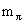
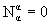

|
2.1.1 Массовые формулы для октета
псевдоскалярных мезонов
Массовый член в лагранжиане для
псевдоскалярного мезона, описываемого волновой
функцией Р , имеет вид, квадратичный по массе (с
тем, чтобы уравнение Лагранжа-Эйлера для полного
лагранжиана свободного точечного мезона
приводило к уравнению Клейна-Гордона, где масса
мезона входит квадратично)
а для октета таких мезонов с вырожденными
массами:
(по повторяющимся индексам подразумевается
суммирование), тогда как =140
МэВ, mK = 490 МэВ,  = 548
МэВ. Гелл-Манн
предложил отказаться от принципа, что лагранжиан
должен быть скаляром по группе симметрии сильных
взаимодействий, в данном случае по группе SU(3), и
ввести нарушение симметрии, но таким образом,
чтобы сохранялся изотопический спин и
странность (или гиперзаряд Y = S + B, где B
-барионный заряд, для мезонов равный нулю). Для
этого член, нарушающий симметрию, должен иметь
нулевые значения изоспина и гиперзаряда.
Гелл-Манн предложил простое решение - массовый
член должен преобразовываться как компонента 33
октета, выделенного из прямого произведения двух
октетов, в которые входят эти мезоны. Сначала в
произведении двух октетов, входящих в
лагранжиан, надо выделить октет. Естественно
свернуть произведение по
верхнему и нижнему индексам или и вычесть
шпур с тем, чтобы образовать правильные октеты = 548
МэВ. Гелл-Манн
предложил отказаться от принципа, что лагранжиан
должен быть скаляром по группе симметрии сильных
взаимодействий, в данном случае по группе SU(3), и
ввести нарушение симметрии, но таким образом,
чтобы сохранялся изотопический спин и
странность (или гиперзаряд Y = S + B, где B
-барионный заряд, для мезонов равный нулю). Для
этого член, нарушающий симметрию, должен иметь
нулевые значения изоспина и гиперзаряда.
Гелл-Манн предложил простое решение - массовый
член должен преобразовываться как компонента 33
октета, выделенного из прямого произведения двух
октетов, в которые входят эти мезоны. Сначала в
произведении двух октетов, входящих в
лагранжиан, надо выделить октет. Естественно
свернуть произведение по
верхнему и нижнему индексам или и вычесть
шпур с тем, чтобы образовать правильные октеты
,  (по повторяющимся индексам
подразумевается суммирование). Компоненты 33 этих
октетов M33 и N33 и
послужат искомыми членами, нарушающими
симметрию массовой части лагранжиана LmP
Следует только учесть, что в октете мезонов
содержатся и частицы, и античастицы. Поэтому для
того, чтобы массы частиц и античастиц оказались
одинаковыми, оба нарушающих массовых члена
должны входить с одинаковыми коэффициентами. В
итоге можно записать массовый член лагранжиана в
виде
Собирая коэффициенты при одинаковых
билинейных комбинациях псевдоскалярных полей,
получим:
откуда немедленно следует соотношение
 4·0.245 = 3·0.30 + 0.02 (ГэВ)2.
4·0.245 = 3·0.30 + 0.02 (ГэВ)2.
|
(2.8) |
Согласие получилось впечатляющее, учитывая
прозрачность заложенных предположений и
простоту формализма.
|